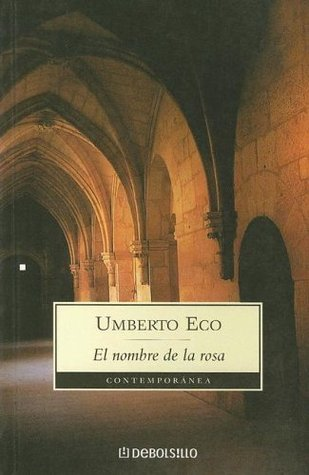

El nombre de la rosa
Reseña por Jorge I. Zuluaga

Ver reseña en GoodReads (necesita cuenta)
Como siempre, es difícil escribir una reseña sobre un clásico de la literatura como aquel en el que se ha convertido esta novela contemporánea de Umberto Ecco.
¿Cuántas páginas, cuántas reseñas profesionales, tesis literarias, historiográficas o filosóficas se habrán escrito a la fecha sobre ella? ¿qué puede agregar una reseña mía a lo ya dicho?. Prácticamente nada. Pero creo que tampoco es eso lo que buscan quienes le dedican un poco más de una mirada superficial a mis reseñas. Tal vez estén buscando las opiniones espontáneas o las impresiones de última página de un lector como muchas de las personas que abundan en esta red.
Para mi, las reseñas son una manera de comunicarme con mi yo futuro; ese que habrá olvidado las emociones que le evoco esta novela, los datos que descubrió, la impresión que quedo de un autor que leí por primera vez. Para aquellas (lectoras espontáneas) y para él (mi yo futuro) es esta reseña.
La primera impresión que me quedo de leer "El nombre de la rosa" fue de profunda admiración por Ecco. Solo alguien con su tremenda erudición, su basto conocimiento de la edad media, demostrado por sus libros y artículos académicos sobre el tema, su seguro dominio de varias de las lenguas que protagonizan la novela, incluyendo por supuesto el latín, solo alguien como él podría escribir una ficción como esta tan parecida a una verdad de esas que aparecen en los libros de historia.
Las descripciones de los lugares, la Abadía, los detalles de los frescos de la iglesia, el osario, la biblioteca son simplemente magistrales. La erudición demostrada por el autor también en su descripción de una significativa cantidad de textos históricos es, otra vez impresionante.
El personaje de Guillermo de Baskerville, que de manera genial Ecco lo hace homónimo pero además conocido y amigo (en la novela) del admirado (por lo menos en las ciencias) Guillermo de Ockham, es simplemente genial. Ecco pudo escribir sin dificultad una saga de aventuras con Baskerville como protagonista a la manera de las sagas de investigadores geniales como Auguste Dupin (Poe), Hercules Poirot (Christie) o Sherlock Holmes (Conan-Doyle).
Muy a pesar de la opinión anterior, me parece que la capacidad analítica de Baskerville se desperdicia un poco en la novela. Aparte de la increíble deducción que realiza al principio de la historia cuando identifica, entre otras cosas, al caballo del Abad, Brunello, tan solo por sus pisadas y otras huellas, no volvemos a leer ninguna deducción realmente impresionante en el resto de la novela. Aunque esto suene "pecaminoso", creo que Ecco cambio a Baskerville en algún momento de la escritura de la obra; nos anticipa un Sherlock Holmes medieval y termina describiendo a un brillante franciscano que no deja de rezumar humildad (en contraste con la mayoría del investigador ficticio decimonónico) el resto de la novela.
No entendí muy bien aquí, como tampoco lo había hecho cuando vi la adaptación al cine de la misma (leer más abajo mis impresiones al respecto), la importancia de las escenas sexuales en las que Adso de Melk es seducido por una campesina que entra en la abadía. Yo no sé si existan cosas que le sobren a una novela, pero la verdad que si hay historias que no encajan muy bien en un relato, que parecen forzadas y que ciertamente no habrían ocurrido en la realidad.
La parte de la historia del debate teológico entre las comunidades Dominica y Franciscana sobre la pobreza de Jesús, así como de la rivalidad religiosa y política entre el papá Juan XII (que residía en Avignon) y el emperador del Sacro Imperio Romano Germánico (que residía en Roma) y sus esbirros del clero, me parece interesante pero distrae mucho a quién lee la novela de la que creo es la historia más original y llamativa de la obra, a saber la solución al misterio de las muertes que se producen en la abadía alrededor de los libros.
No soy nadie para decir que ni cómo Ecco debió escribir esta obra, pero creo que muchas personas que intentaron leer "El nombre de la rosa" perdieron el interés por la novela en aquellos capítulos en los que el autor se extiende largamente con aquellas historias que poco o casi nada tienen que ver con la los crímenes de la abadía. Bueno, es cierto que muchos aspectos de ese, el relato central de la novela, y de algunos de sus personajes más importantes no se podrían entender sin los detalles históricos y teológicos descritos en extenso, pero creo que sin esos pormenorizados detalles que convierten esta novela en un tratado de historiografía cristian, podrían haberse abreviado para convertirla en una obra redonda y sin mácula.
No me ha gustado tampoco, al menos en la edición que leí la novela, que la mayor parte de los textos en latín no han sido traducidos. Aunque conozco un poco de esta lengua (muy poco) y puedo adivinar vagamente el significado de algunos de los pasajes (un poco más de lo que se entiende por el contexto en el que son citados y comentados por los personajes), me habría encantado conocer el significado exacto de las frases (citas). Nada que no pudiera resolverse con unos simples pies de página. Creo que los editores fallaron en eso. Espero que en otras ediciones no cometan ese error.
Inmediatamente termine de leer la novela volví a ver la película de Jean-Jacques Annaud de 1986. Cuando vi por primera vez la cinta hace ya casi 20 años, me pareció genial. Pero verla después de tanto tiempo y peor aún, después de leer la novela original, me dejo con un mal sabor de boca. Cada vez estoy más convencido de que es una muy mala idea (quizás suene bastante obvio) ver la película antes de la novela, pero peor aún, pensar que ambas obras artísticas se pueden llegar siquiera a comparar. Es cierto que Annaud señala en la introducción que la suya es solo una especie de "palimpsesto" audiovisual construído sobre la magistral novela de Umberto Ecco, pero creo que la deformación de la obra va más allá de eso. Yo ni siquiera le pondría el mismo nombre a la película.
Mientras buscaba la película encontré que ahora en los 2010 se grabó al menos una temporada de una serie sobre el libro, que llega hasta un cierto punto de la novela. Lamentablemente no hubo una segunda temporada así que la adaptación queda inconclusa. Aún sin verla, imagino que la serie puede haber logrado capturar muchos más detalles que se escaparon a la película. O no. Las reseñas de la serie tampoco son muy halagadoras y en algunos comentarios observé que también se hicieron serias deformaciones de la historia original.